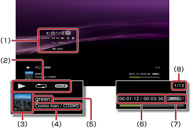

音樂 > 使用操作介面
使用操作介面
使用螢幕上的操作介面，可執行各種操作。操作介面可以 按鈕設定為顯示／不顯示。
按鈕設定為顯示／不顯示。
調整音量

設定選擇 （音樂）播放內容時的輸出音量。可分9階段調整。
（音樂）播放內容時的輸出音量。可分9階段調整。
提示
輸出音量若調整過高，可能會出現雜音或不協調音。此時請降低輸出音量。
Visual Player
更換播放內容時顯示的背景。
提示
 （相片）和
（相片）和 （網路瀏覽介面）同時啟動時，無法變換Visual Player。
（網路瀏覽介面）同時啟動時，無法變換Visual Player。
追加至播放目錄
將樂曲追加至播放目錄。
提示
僅限保存在主機儲存空間的音樂檔案才能追加至播放目錄。
刪除
刪除正在播放的內容。
提示
僅限保存在主機儲存空間的音樂檔案才能被刪除。
顯示
顯示播放中的狀態／資訊。但顯示的情報可能因播放內容而異。

(1) |
操作介面 |
|---|---|
(2) |
狀態圖示 |
(3) |
樂曲圖示 |
(4) |
演唱、演奏者／專輯名稱 |
(5) |
樂曲名稱 |
(6) |
樂曲的已播放時間／總播放時間 |
(7) |
Codec |
(8) |
曲目編號／曲目總數 |
上一首
回到播放中曲目或上一首曲目的起始處。
下一首
移動至下一首曲目的起始處。
快退／快進
快進／快退。若持續按住 按鈕，則僅會於按住時快進／快退。
按鈕，則僅會於按住時快進／快退。
播放
播放內容。
暫停
暫停播放。
停止
停止播放。
重複
進行重複播放。反覆按下按鈕，可交互選擇以下3種模式。
 |
重複播放單首樂曲。 |
|---|---|
|
重複播放所有樂曲。 |
| 不顯示 | 解除重複播放，依曲目順序播放。 |
隨機
隨機播放樂曲。